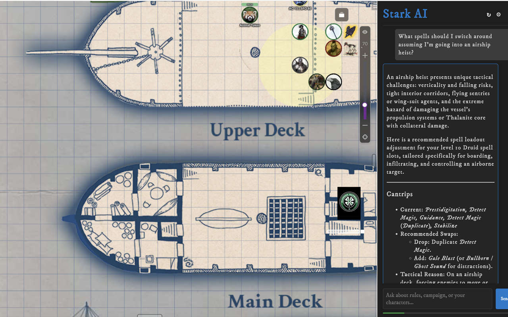
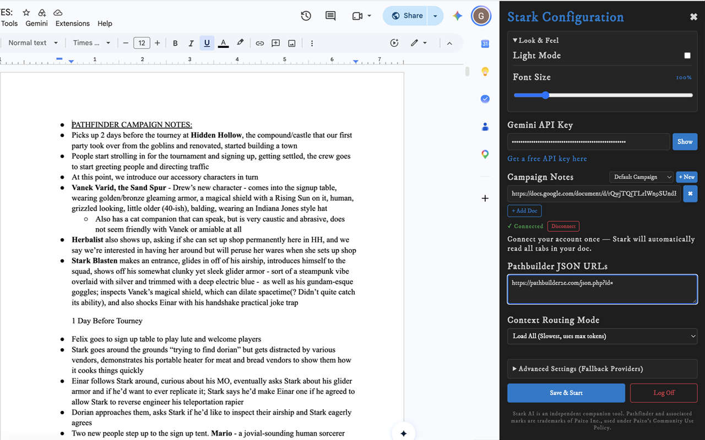

Bundled PF2e Rules & Build Guides
Searches locally bundled Pathfinder 2e Remaster rules, spells, feats, conditions, actions, and curated class build guides directly inside your browser.

A fast, local-first Chrome Side Panel companion for Pathfinder 2e Game Masters and players — combining bundled rules lookup, Pathbuilder 2e character data, and your Google Docs campaign notes.
Searches locally bundled Pathfinder 2e Remaster rules, spells, feats, conditions, actions, and curated class build guides directly inside your browser.
Optional read-only Google Docs integration (documents.readonly) lets Stark read all tabs of the campaign Google Docs URLs you configure to answer lore and session questions.
Paste Pathbuilder 2e JSON export URLs so Stark understands your party's exact stats, prepared/known spells, feats, skills, and equipment.
Configure a custom fallback stack using Google Gemini, OpenRouter, Groq, or a private local LLM server (Ollama / LM Studio).
Switch between campaigns effortlessly, with optional Supabase profile sync to carry your settings and URLs across machines.
No ads, no analytics, and no data selling. Google Docs content is fetched read-only solely to build context for the questions you ask. Read our Privacy Policy.

